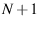

- Support for multi-domain meshing. That is, it is now possible
to specify a problem domain that must be meshed as two or more (max:
31) adjacent regions, with the boundaries between them meshed consistently.
This is the biggest addition to this version of GRUMMP.
- Improved boundary data input format. This was necessary to
support multi-domain meshing, and the new format was designed to be
extensible, with an eye towards meshing from non-polygonal/polyhedral
data.
- Improved geometric calculations. GRUMMP often needs to know
the orientation of

points in  dimensions or whether a given
point is inside the ball formed by other points. Earlier versions
used simple floating point arithmetic to determine these things, and
sometimes ran into trouble as a result. This version incorporates
adaptive-precision versions of these predicates that were developed
by Jonathon Shewchuk of U California, Berkeley, while he was a PhD
student at Carnegie Mellon University.
dimensions or whether a given
point is inside the ball formed by other points. Earlier versions
used simple floating point arithmetic to determine these things, and
sometimes ran into trouble as a result. This version incorporates
adaptive-precision versions of these predicates that were developed
by Jonathon Shewchuk of U California, Berkeley, while he was a PhD
student at Carnegie Mellon University.
- File name changes. All GRUMMP include filesA.2 are now prefixed with GR_ to avoid naming conflicts. Also,
in deference to non-case-sensitive operating systems, all C++ files
now have a .cxx suffix instead of .C.
- Minor bug fixes. All but a couple of the problem input files
sent to me after version 0.1.6 now work.
- Changes to quote handling for I/O generation. The old way
of handling non-keyword text in I/O template files made it impossible
to have
x 0.5 y 0.7
as a vertex coordinate line; the `x' and `y' were not handled
properly. These changes affect all cases where quotes are used in
template files, so check any template files you have created to make
sure they are compatible with the new form of quote handling.
- Unified lex input files for I/O
generation. All input generation is now done from a single lex
file, and all output generation is done from a (different) single
lex file. This removed inconsistencies between the 2D and
3D versions of the I/O generation code.